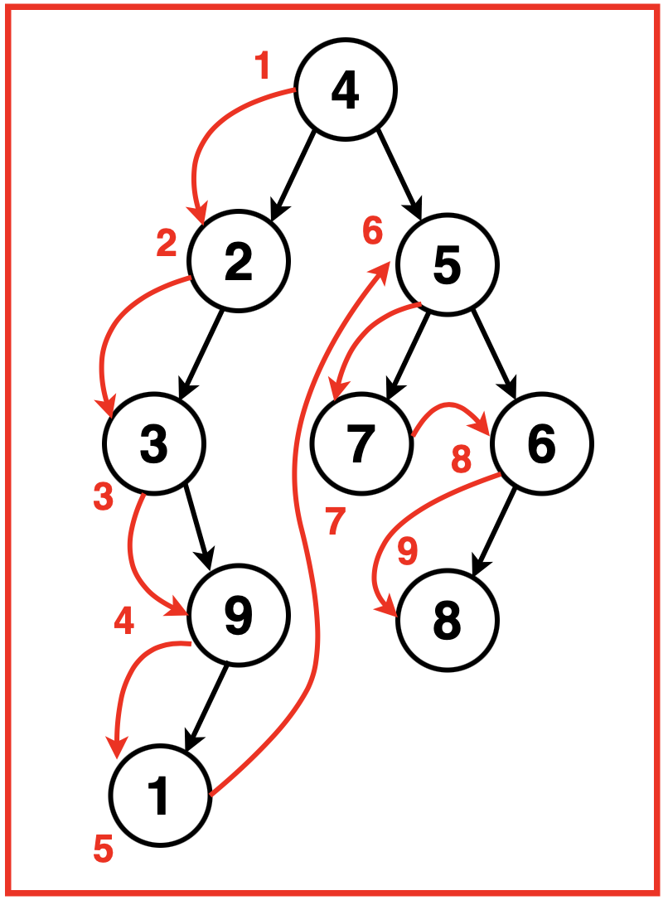
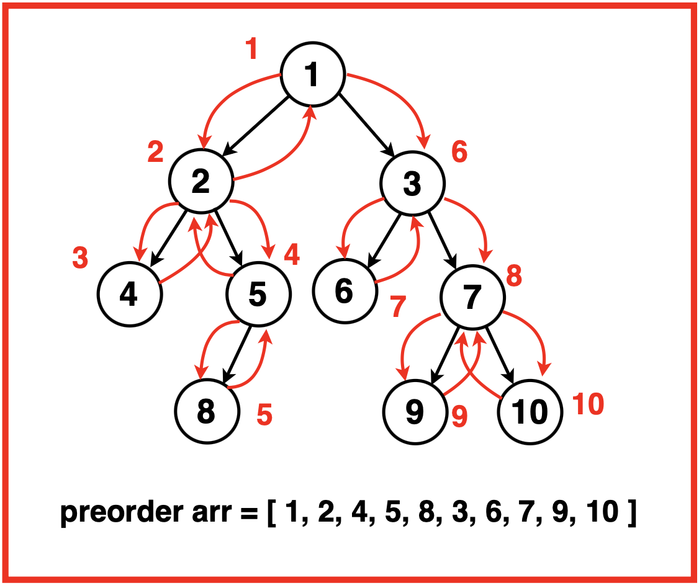

Problem Statement: Given the root of a Binary Tree, write a function that returns an array containing the preorder traversal of the tree using an iterative approach with a stack.
Examples
Example 1:Input: Binary Tree: 4 2 5 3 -1 7 6 -1 9 -1 -1 8 -1 1Output: [4 2 3 9 1 5 7 6 8] Explanation: We traverse the binary tree in the order of Root, Left then Right recursively resulting in the following traversal:Example 2:Input:Binary Tree: 1 2 3 4 5 6 7 -1 -1 8 -1 -1 -1 9 10
Output : [1 2 4 5 8 3 6 7 9 10]Explanation: We traverse the binary tree in the order of Root, Left then Right recursively resulting in the following traversal:
Disclaimer: Don’t jump directly to the solution, try it out
yourself first.
Optimal Approach
Algorithm / Intuition
As a prerequisite to this approach, please understand Preorder Traversal in detail.The preorder traversal of a Binary Tree follows the order: Root, Left then Right.An iterative approach maintains a stack structure to simulate the recursive nature of the traversal without using actual recursion. The stack follows a last-in-first-out methodology and stores the nodes yet to be processed mimicking the depth-first search characteristic of preorder traversal.Initially the root node is pushed into the stack. While the stack is not empty, we continuously pop nodes from the stack and for each popped node, we add its value to the resultant traversal vector, push its right child onto the stack followed by its left child.This sequence ensures that the left child, which should be processed first in the preorder traversal, is visited before the right child due to the Last In, First Out behaviour of the stack. This process continues until all nodes are traversed.
Algorithm:
Step 1: Initialise an empty vector ‘preorder’ to store the preorder traversal result. Create a stack to store the nodes during traversal and push the root node onto the stack.Check if the root is null, return an empty traversal result if true.
Step 2: Push the root of the binary tree into the stack.
Step 3:
While the stack is not empty:
Get the current node from the top of the stack.
Remove the node from the stack.
Add the node’s value to the preorder traversal result.
First, push the right child onto the track if it exists.
Secondly, push the left child onto the stack if it exists.
Step 4: Return the ‘preorder’ traversal result.
Code
#include <iostream>
#include <vector>
#include <stack>
using namespace std;
// Define the TreeNode structure
struct TreeNode {
int val;
TreeNode* left;
TreeNode* right;
TreeNode(int x) : val(x), left(nullptr), right(nullptr) {}
};
class Solution {
public:
// Function to perform preorder traversal
// of a binary tree iteratively
vector<int> preorderTraversal(TreeNode* root) {
// Initialize vector to store
// the preorder traversal result
vector<int> preorder;
// If the root is null, return
// an empty traversal result
if(root == nullptr) {
return preorder;
}
// Create a stack to store
// nodes during traversal
stack<TreeNode*> st;
// Push the root node
// onto the stack
st.push(root);
// Perform iterative preorder traversal
while(!st.empty()) {
// Get the current node
// from the top of the stack
root = st.top();
// Remove the node
// from the stack
st.pop();
// Add the node's value to
// the preorder traversal result
preorder.push_back(root->val);
// Push the right child
// onto the stack if exists
if(root->right != nullptr) {
st.push(root->right);
}
// Push the left child onto
// the stack if exists
if(root->left != nullptr) {
st.push(root->left);
}
}
// Return the preorder
// traversal result
return preorder;
}
};
int main() {
// Creating a binary tree
TreeNode* root = new TreeNode(1);
root->left = new TreeNode(2);
root->right = new TreeNode(3);
root->left->left = new TreeNode(4);
root->left->right = new TreeNode(5);
// Initializing the Solution class
Solution sol;
// Getting the preorder traversal
vector<int> result = sol.preorderTraversal(root);
// Displaying the preorder traversal result
cout << "Preorder Traversal: ";
for (int val : result) {
cout << val << " ";
}
cout << endl;
return 0;
}
import java.util.*;
// Define the TreeNode structure
class TreeNode {
int val;
TreeNode left;
TreeNode right;
TreeNode(int x) {
val = x;
left = null;
right = null;
}
}
class Solution {
// Function to perform preorder traversal
// of a binary tree iteratively
public List<Integer> preorderTraversal(TreeNode root) {
// Initialize list to store
// the preorder traversal result
List<Integer> preorder = new ArrayList<>();
// If the root is null, return
// an empty traversal result
if (root == null) {
return preorder;
}
// Create a stack to store
// nodes during traversal
Stack<TreeNode> st = new Stack<>();
// Push the root node
// onto the stack
st.push(root);
// Perform iterative preorder traversal
while (!st.empty()) {
// Get the current node
// from the top of the stack
root = st.pop();
// Add the node's value to
// the preorder traversal result
preorder.add(root.val);
// Push the right child
// onto the stack if exists
if (root.right != null) {
st.push(root.right);
}
// Push the left child onto
// the stack if exists
if (root.left != null) {
st.push(root.left);
}
}
// Return the preorder
// traversal result
return preorder;
}
}
public class Main {
public static void main(String[] args) {
// Creating a binary tree
TreeNode root = new TreeNode(1);
root.left = new TreeNode(2);
root.right = new TreeNode(3);
root.left.left = new TreeNode(4);
root.left.right = new TreeNode(5);
// Initializing the Solution class
Solution sol = new Solution();
// Getting the preorder traversal
List<Integer> result = sol.preorderTraversal(root);
// Displaying the preorder traversal result
System.out.print("Preorder Traversal: ");
for (int val : result) {
System.out.print(val + " ");
}
System.out.println();
}
}
from typing import List
# Define the TreeNode structure
class TreeNode:
def __init__(self, x):
self.val = x
self.left = None
self.right = None
class Solution:
# Function to perform preorder traversal
# of a binary tree iteratively
def preorderTraversal(self, root: TreeNode) -> List[int]:
# Initialize list to store
# the preorder traversal result
preorder = []
# If the root is None, return
# an empty traversal result
if root is None:
return preorder
# Create a stack to store
# nodes during traversal
st = []
# Push the root node
# onto the stack
st.append(root)
# Perform iterative preorder traversal
while st:
# Get the current node
# from the top of the stack
root = st.pop()
# Add the node's value to
# the preorder traversal result
preorder.append(root.val)
# Push the right child
# onto the stack if exists
if root.right:
st.append(root.right)
# Push the left child onto
# the stack if exists
if root.left:
st.append(root.left)
# Return the preorder
# traversal result
return preorder
# Creating a binary tree
root = TreeNode(1)
root.left = TreeNode(2)
root.right = TreeNode(3)
root.left.left = TreeNode(4)
root.left.right = TreeNode(5)
# Initializing the Solution class
sol = Solution()
# Getting the preorder traversal
result = sol.preorderTraversal(root)
# Displaying the preorder traversal result
print("Preorder Traversal:", end=" ")
for val in result:
print(val, end=" ")
print()
class TreeNode {
constructor(x) {
this.val = x;
this.left = null;
this.right = null;
}
}
class Solution {
// Function to perform preorder traversal
// of a binary tree iteratively
preorderTraversal(root) {
// Initialize array to store
// the preorder traversal result
let preorder = [];
// If the root is null, return
// an empty traversal result
if (root === null) {
return preorder;
}
// Create a stack to store
// nodes during traversal
let stack = [];
// Push the root node
// onto the stack
stack.push(root);
// Perform iterative preorder traversal
while (stack.length > 0) {
// Get the current node
// from the top of the stack
root = stack.pop();
// Add the node's value to
// the preorder traversal result
preorder.push(root.val);
// Push the right child
// onto the stack if exists
if (root.right !== null) {
stack.push(root.right);
}
// Push the left child onto
// the stack if exists
if (root.left !== null) {
stack.push(root.left);
}
}
// Return the preorder
// traversal result
return preorder;
}
}
// Creating a binary tree
let root = new TreeNode(1);
root.left = new TreeNode(2);
root.right = new TreeNode(3);
root.left.left = new TreeNode(4);
root.left.right = new TreeNode(5);
// Initializing the Solution class
let sol = new Solution();
// Getting the preorder traversal
let result = sol.preorderTraversal(root);
// Displaying the preorder traversal result
console.log("Preorder Traversal: " + result.join(" "));
Output
Preorder Traversal: 1 2 3 4 5
Complexity Analysis
Time Complexity: O(N) where N is the number of nodes in the binary tree. Every node of the binary tree is visited exactly once, and for each node, , the operations performed (pushing and popping from the stack, accessing node values, etc.) are constant time operations.
Space Complexity: O(N) where N is the number of nodes in the binary tree. This is because the stack can potentially hold all nodes in the tree when dealing with a skewed tree (all nodes have only one child), consuming space proportional to the number of nodes.
Video Explanation
Special thanks to Gauri Tomar for contributing to this article on takeUforward. If you also wish to share your knowledge with the takeUforward fam, please check out this article